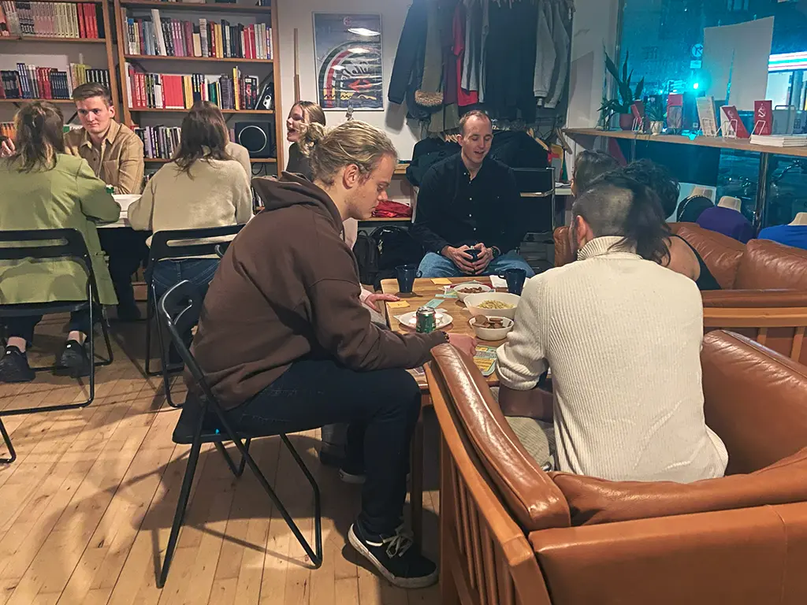

Frivillig hos MAK
Velkommen til Mellemamerika Komitéen - Bliv en del af vores frivillige fællesskab!
Din indflydelse og læring hos MAK
I MAK drives alt af frivillige, hvilket giver dig en unik mulighed for selvbestemmelse og læring gennem
vores projektgrupper og aktivitetsgrupper.
Du har direkte indflydelse på enhver udviklingsfase i et projekt eller kan deltage i kampagnearbejde.
Ved at engagere dig i en projektgruppe hos MAK får du hands-on erfaring inden for udviklingsområdet og
konkrete færdigheder inden for projektarbejde. Det inkluderer at udforme ansøgninger til donorer, dialog
med vores partnere i Mellemamerika og opbygge solidt lokalt kendskab.
Sammenspil af projekter og fællesskab hos MAKtivister
Vi er organiseret i forskellige baggrundsgrupper, der arbejder med diverse projekter og kampagner. Læs
mere om dem under vores arbejde.
Som frivillig MAKtivist bliver du en del af et stærkt socialt fællesskab. Vi tager vores projekter
seriøst, men vægter også sociale arrangementer, såsom julefrokoster, fester i forbindelse med
forårsseminar og arbejdsweekender.
Tilpasning og engagement hos MAK
I MAK er du frivillig på dine egne præmisser. Det er muligt at være en del af en gruppe, uanset hvor i
landet du befinder dig. Måske kan du bidrage online? Eller er du i København eller Århus et par gange om
året?
Uanset hvad, vil vi gerne høre fra dig og gøre vores bedste for at matche dig med den
aktivitet
eller projektgruppe, der passer bedst til dine behov og erfaringer!
Spørgsmål?
Du er altid velkommen som frivillig hos Mellemamerika Komitéen. Kontakt os på info@makomiteen.dk for mere information!


Nedenfor finder du en oversigt over vores forskellige grupper hos MAK.
Projektgrupper:
- Solidaritetsrejser til Mellemamerika
- Rejsekoordinering (planlægning af solidaritetsrejserne)
- MAKkult
- Minedrift og oprindelig befolkning i Guatemala
- Kvindeligt migrant netværk i Costa Rica
- REMO - kvindenetværk i Nicaragua
- Aktivitetsgrupper:
Eventgrupper (MAK Kbh og MAK Aarhus):
- Sprogcafé og folkekøkken
- Latinamerika Dag
- MAMA-redaktionen
- Kommunikation (SoMe)
- Hjemmeside
- Netværk: Forum for Madsuverænitet
- Netværk: Nordisk Netværk for Demokrati og Menneskerettigheder i Nicaragua
- Netværk: Nicaragua-netværk i København
- De fleste projektgrupper og aktivitetsgrupper hos MAK er åbne for nye frivillige løbende.
Du kan også finde frivillige stillinger hos MAK inde på Frivilligjob.dk
Kontakt
Kontakt MAKs landssekretær Helene Silva-Sørensen på info@makomiteen.dk eller ring på 21521740 for at blive introduceret til den relevante kontaktperson. Bliv en del af MAK - Gør en forskel, skab forandring!